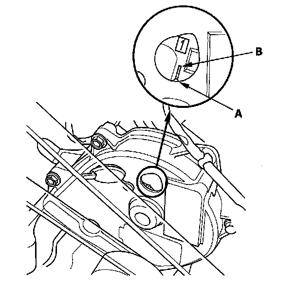
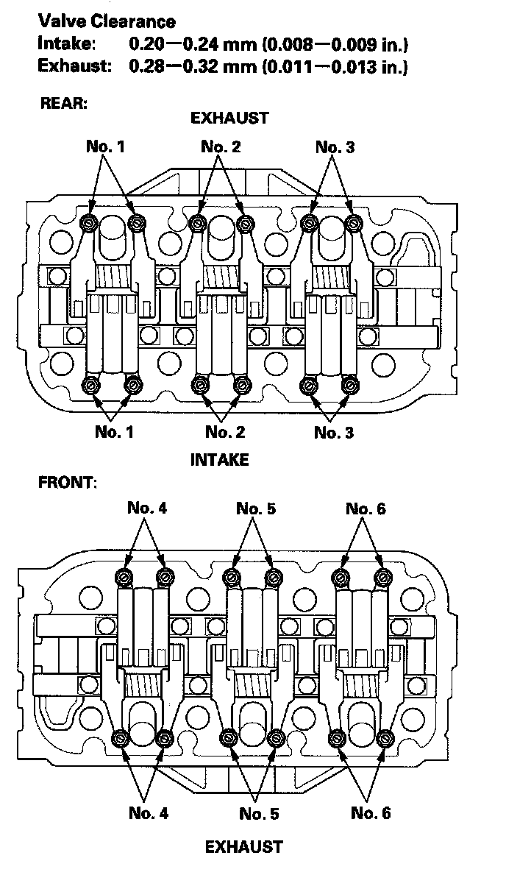
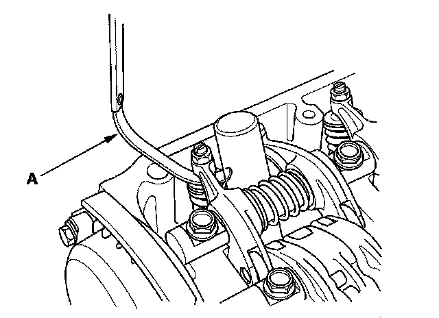
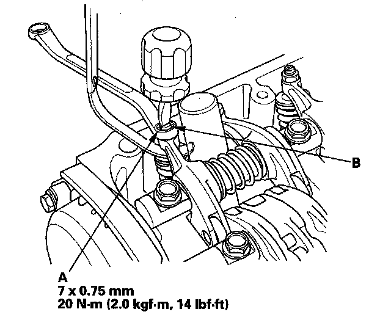
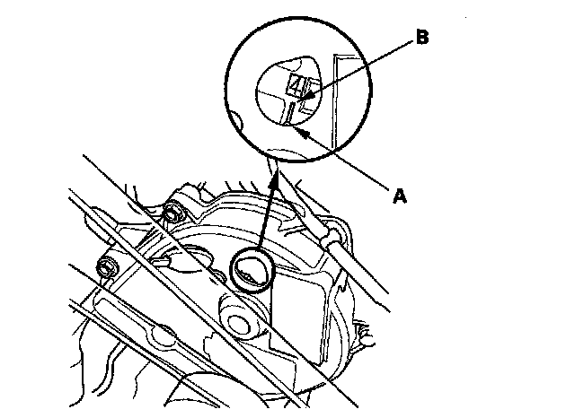
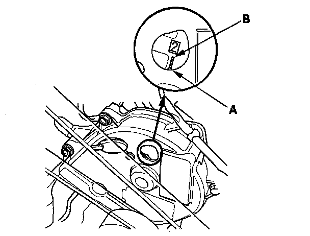
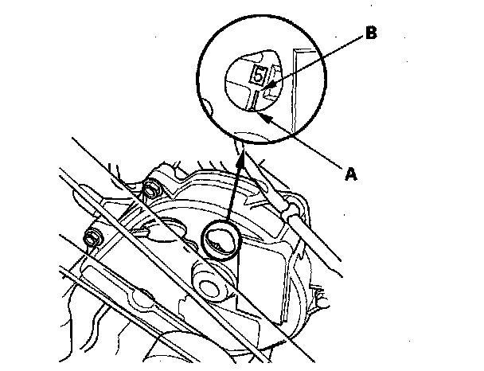
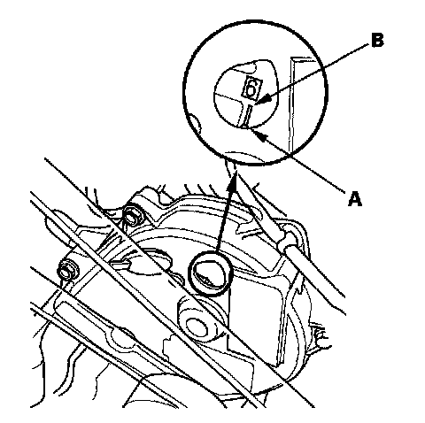

Valve Clearance: Adjustments
Valve Clearance AdjustmentNOTE: Adjust the valves only when the cylinder head temperature is less than 100° F (38° C).
1. Remove the intake manifold.
2. Remove the cylinder head covers.
3. Set the No. 1 piston at top dead center (TDC). Align the pointer (A) on the front upper cover with the No. 1 piston TDC mark (B) on the front camshaft pulley.

4. Select the correct thickness feeler gauge for the valves you're going to check.

5. Insert the feeler gauge (A) between the adjusting screw and the end of the valve stem on No. 1 cylinder and slide it back and forth; you should feel a slight amount of drag.

6. If you feel too much or too little drag, loosen the locknut (A), and turn the adjusting screw (B) until the drag on the feeler gauge is correct.

7. Tighten the locknut and recheck the clearance. Repeat the adjustment, if necessary.
8. Rotate the crankshaft clockwise. Align the pointer (A) on the front upper cover with the No. 4 piston TDC mark (B) on the front camshaft pulley.

9. Check and, if necessary, adjust the valve clearance on No. 4 cylinder.
10. Rotate the crankshaft clockwise. Align the pointer (A) on the front upper cover with the No. 2 piston TDC mark (B) on the front camshaft pulley.

11. Check and, if necessary, adjust the valve clearance on No. 2 cylinder.
12. Rotate the crankshaft clockwise. Align the pointer (A) on the front upper cover with the No. 5 piston TDC mark (B) on the front camshaft pulley.

13. Check and, if necessary, adjust the valve clearance on No. 5 cylinder.
14. Rotate the crankshaft clockwise. Align the pointer (A) on the front upper cover with the No. 3 piston TDC mark (B) on the front camshaft pulley.
15. Check and, if necessary, adjust the valve clearance on No. 3 cylinder.
16. Rotate the crankshaft clockwise. Align the pointer (A) on the front upper cover with the No. 6 piston TDC mark (B) on the front camshaft pulley.

17. Check and, if necessary, adjust the valve clearance on No. 6 cylinder.
18. Install the cylinder head covers.
19. Install the intake manifold.